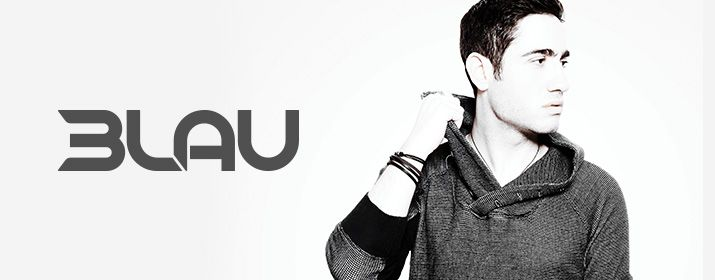

Mainstage: 22:00-23:00!
Justin Blau, alias 3LAU ist ein amerikanischer Progressive House und Electro House
Produzent. 3lau wurde in New York geboren und wuchs in einer Künstlerfamilie auf.
Er entdeckte früh seine Liebe zur Musik und spielt Klavier und Gitarre.
Mit Girls Who Save the Worldund All Night Longerntete er erste Erfolge.
Außerdem gewann er einen Remix Contest von Tiëstos Work Hard, Play Hard.
Seit 2011 veröffentlichte er seine Bootleg-Serie Dance Floor Filth. Top-DJs wie Bob
Sinclar, Hardwell und Porter Robinson nahmen einige Stücke in ihr Repertoire auf.
Parallel dazu ging er auf 3LAU Your Mind-Tour, gefolgt von der Night-Riot-Tour
zusammen mit Carnage.
Seit 2013 ist er auch vermehrt auf großen Festivals zu sehen, wie dem Ultra Music
Festival oder dem Electric Daisy Carnival.
2014 erschien mit Vikingseine Kollaboration mit Botnek auf dem Label Dim Mak. Im
Jahr 2014 wurde 3LAU auf Platz 81 in die DJ Mag Top 100 der besten DJs gewählt.
3Lau ist nicht nur als DJ aktiv, er unterstützt auch das Projekt Pencils of Promise.
Von seinen Tourgeldern und seinen Download-Erlösen wird ein Teil abgezweigt und
in Schulgründungen in Guatemala investiert.
3LAUs Musik zeichnet sich durch eine ganze Bandbreite an Einflüssen aus und er
arbeitet genreübergreifend, unter anderem mit Mashups, House und Dubstep und
verwendet oft Gitarren- und Klavierklänge. Bei seinen Liveshows verwendet er
Mashups, Electro-House, poppige Gesangsamples sowie Samples aus den 1990ern